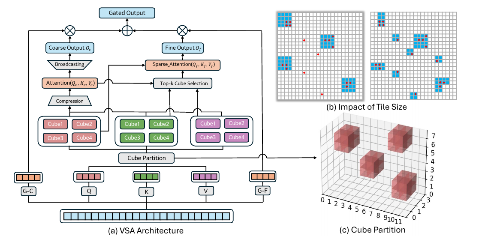
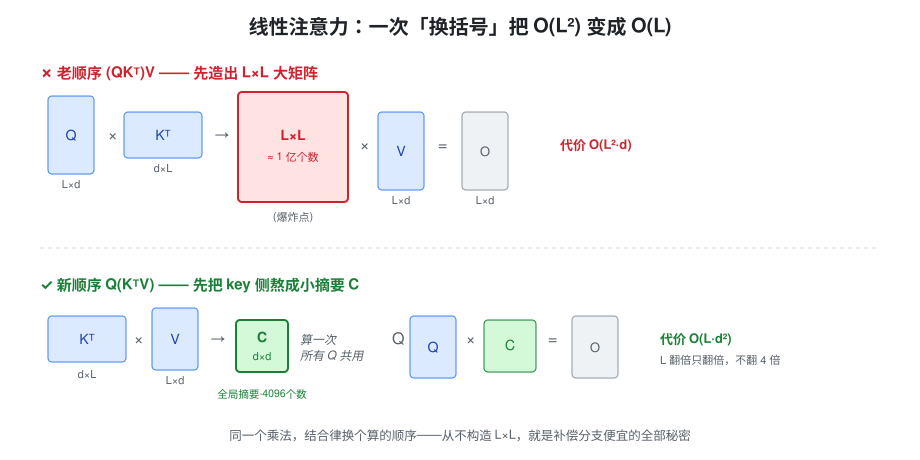
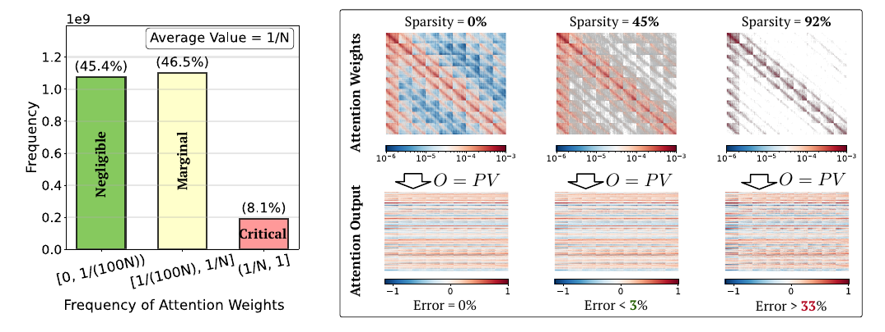
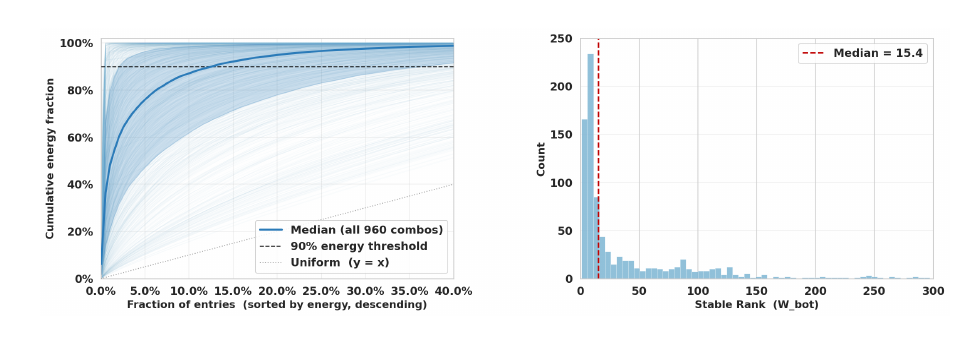
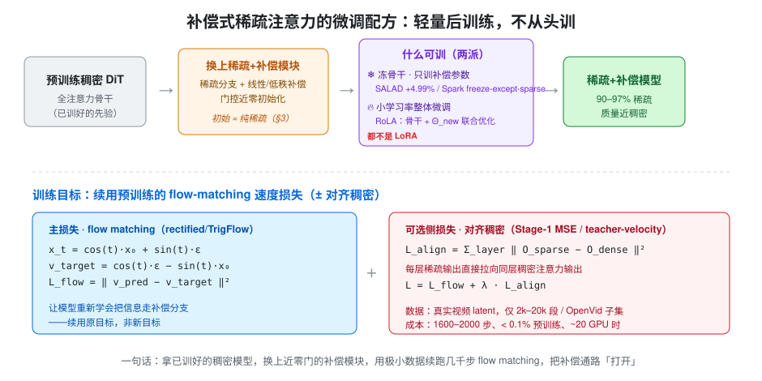
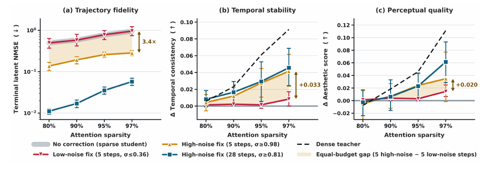
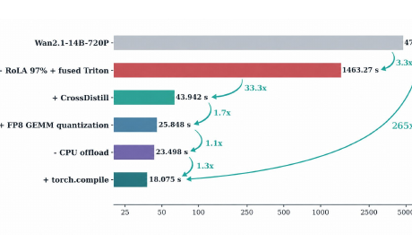

补偿式稀疏注意力：视频扩散如何在 90%+ 稀疏下不崩
视频扩散 Transformer 每一个采样步都要在整条时空 token 序列上做一次全注意力，序列长度动辄十万级，\(O(L^2)\) 的开销是端到端延迟的头号来源。过去一年半里，一条清晰的技术主线在此成型：用块稀疏砍掉大部分注意力计算，再挂一条 \(O(L)\) 的线性/低秩补偿分支把丢掉的全局背景捞回来——这就是「补偿式稀疏注意力」。它把可用稀疏度从 90% 推向 97%，但也在 97% 处撞到一个更深的天花板。
这篇教程把这条线从头讲透：不是罗列论文，而是沿着「为什么这么设计、推导里的非显然关键步、代码落在哪几行、失效边界在哪」展开。读者假设为熟悉注意力 / 扩散 / 损失函数的 CV/ML 同行。每一节走同一套螺旋：直觉定位 → 真实形状可跑的最小 demo → 完整推导 → 真实仓库代码逐行对照 → 设计洞察。想先要一张全景对比表（各方法的稀疏度 / 加速 / 机制差异 / 代码交叉验证），见配套调研页 compensated-sparse-attention-2026；本教程负责把机制讲透，调研页负责把家族摆开对比。
1. 瓶颈与朴素稀疏为何崩
1.1 直觉
Video DiT 的采样成本几乎全压在自注意力上：每一个去噪步都要对整条展平的时空 token 序列做一次全局自注意力，而一段几秒的高分辨率视频，patch 化后 \(L\) 轻松突破 10 万。\(O(L^2)\) 的注意力矩阵随分辨率、帧数平方级膨胀，直接主导端到端延迟，去噪步数越多这个乘子越吓人。块稀疏是最自然的省法：把 \(L\times L\) 的注意力矩阵沿 query/key 维切成连续块，只对"高能"块精确算注意力，其余整块跳过——按块而非按 token，是为了贴合 GPU 的分块访存与矩阵乘布局。
但"把低能块当零扔"是危险假设。SLA 在 Wan2.1 上实测了注意力权重的分布：真正 critical 的块只占 8.1%，negligible（可安全丢弃）占 45.4%，而中间那层 marginal 占了 46.5%。只扔最小的约 45% 时输出误差 \(\lt 3\%\)；可一旦把 marginal 也一并当垃圾扔掉、把稀疏度推到 92%，输出误差直接飙到 33%。丢掉的不是零，是弥散的一大坨小量。

1.2 最小 demo
import torch, torch.nn.functional as F
torch.manual_seed(0)
H, L, d, B = 4, 1024, 64, 64 # 头数 / 序列长 / 头维 / 块大小
nb = L // B # 16 个块
Q, K, V = [torch.randn(H, L, d) for _ in range(3)]
scale = d ** -0.5
# 全注意力参考输出
full = (F.softmax(Q @ K.transpose(-1, -2) * scale, dim=-1)) @ V
Qb = Q.view(H, nb, B, d).mean(2) # 每个 query 块的均值代表
Kb = K.view(H, nb, B, d).mean(2) # 每个 key 块的均值代表
block_score = Qb @ Kb.transpose(-1, -2) # (H, nb, nb) 块级近似分数
for keep in [8, 5, 3, 2, 1]: # 保留块数：稀疏度 50%→94%
idx = block_score.topk(keep, dim=-1).indices # 每个 q 块选 top-keep 个 k 块
mask = torch.zeros(H, nb, nb).scatter_(-1, idx, 1.0)
full_mask = mask.repeat_interleave(B, 1).repeat_interleave(B, 2) # 展开到 token 级
logits = (Q @ K.transpose(-1, -2) * scale).masked_fill(full_mask == 0, float('-inf'))
out = F.softmax(logits, dim=-1) @ V
mse = (out - full).pow(2).mean().item()
print(f"keep={keep:>2} 块 稀疏度={1-keep/nb:5.1%} 相对全注意力 MSE={mse:.4e}")
运行会看到：保留 8 块（50% 稀疏）时 MSE 很小，而降到 1–2 块（94% 稀疏）时误差成量级地爆炸——被 top-k 剔除的块里那一大堆"不大不小"的权重，累加起来足以扭曲 softmax 归一化后的输出。
1.3 正式化
全注意力对每个 query 都要与全部 \(L\) 个 key 做内积并归一化，矩阵乘规模为：
—— 翻译: 成本随序列长平方增长，所以 $L$ 从万级跨到十万级时注意力单独就吃掉端到端延迟的大头，光靠算子融合或降精度救不回这个量级。
把矩阵沿 query/key 切成大小 \(B\) 的块，共 \(n_b = L/B\) 个块。定义稀疏度 \(s\) 为被整块跳过的比例，保留块比例为 \(1-s\)，则计算量正比于实际参与的块数：
—— 翻译: 省下的算力线性正比于稀疏度，稀疏度是唯一旋钮；但它只决定"算多少"，完全不保证"算的是不是对的"——被跳过的 $s$ 部分默认贡献为零，这个假设成立与否才是质量的命门。
代入具体数字看拐点：稀疏度从 \(90\%\) 提到 \(97\%\)，保留块比例从 \(1-s=0.10\) 降到 \(0.03\)：
—— 翻译: 多推 7 个百分点的稀疏度能再砍到三成算力，诱惑极大；可 §1.1 的分布告诉我们，这最后几个点正好开始吞掉 marginal 块，省下的 70% 算力是拿 33% 的输出误差换来的——收益曲线陡、代价曲线更陡。
1.4 代码引用
先看"哪些 token 被选中"的真实实现。SLA 的 get_block_map 就是 §1.2 demo 的工业版：块级 mean-pool 打分 + top-k 选块。
sources/repos/thu-ml-SLA/sparse_linear_attention/utils.py:L55-L67 — 块级 mean-pool 打分 + top-k 选块（哪些 token 被选中）
def get_block_map(q, k, topk_ratio, BLKQ=64, BLKK=64):
arg_k = k - torch.mean(k, dim=-2, keepdim=True) # smooth-k technique in SageAttention
pooled_qblocks = mean_pool(q, BLKQ)
pooled_kblocks = mean_pool(arg_k, BLKK)
pooled_score = pooled_qblocks @ pooled_kblocks.transpose(-1, -2)
K = pooled_score.shape[-1]
topk = min(K, int(topk_ratio * K))
lut = torch.topk(pooled_score, topk, dim=-1, sorted=False).indices
sparse_map = torch.zeros_like(pooled_score, dtype=torch.int8)
sparse_map.scatter_(-1, lut, 1)
return sparse_map, lut, topk
保留几个块，则由稀疏度反算。VSA 的 compute_topk 把稀疏度旋钮直接换算成保留块数并夹到 \([1, n_b]\)：
sources/repos/hao-ai-lab-FastVideo/fastvideo/attention/backends/video_sparse_attn.py:L161-L163 — 稀疏度→保留块数
def compute_topk(sparsity: float, num_blocks: int) -> int:
"""Blocks to keep for a sparsity level, clamped to [1, num_blocks]."""
return max(1, min(math.ceil((1 - sparsity) * num_blocks), num_blocks))
对照：get_block_map 逐行对应 §1.3 的块级选择——mean_pool(q) / mean_pool(arg_k) 把每个块压成一个代表向量（正是 demo 里的 Qb/Kb），pooled_score = pooled_qblocks @ pooled_kblocks.T 是块级近似分数矩阵，torch.topk(..., topk) 挑出每个 query 块最该保留的 key 块，scatter_ 把结果写成 0/1 的 sparse_map——只有被标 1 的块下游才会精确算注意力。这里有两个要害：其一，topk 的粒度是块不是 token（lut 索引的是 block id），因为只有整块保留才能对齐 GPU 的连续访存与 GEMM 分块，逐 token 选点在硬件上不真加速；其二，pooled_score 是块均值的内积，是一个近似——块内真正 critical 的少量 token 会被均值稀释，粗打分完全可能漏掉本该保留的块。而 compute_topk 里的 (1 - sparsity) * num_blocks 正是 §1.3 的 \((1-s)\,n_b\)：稀疏度是唯一入口，保留块数随它线性缩减。
1.5 洞察
- 稀疏单独用有天花板。 被丢弃的质量不是几个孤立的零，而是弥散在大量 marginal 块里的一整坨小量；稀疏度一旦越过 critical/negligible 的分界，误差不是线性上升而是塌方。
- 正确的补救是"概括"而非"再多选几块"。 与其把保留块数往上加（立刻吃掉算力红利），不如用一条廉价的全局摘要把被跳过部分的贡献近似补回来——这正是 §2 线性注意力分支要做的事。
- 按块选是硬件约束，不是精度选择。 逐 token 稀疏理论 FLOPs 更省，但破坏连续访存与 GEMM 分块、实测不加速；块粒度是"能落地的稀疏"的下限，也解释了为何粗打分注定近似、注定会漏块。
2. 补偿的核心武器：线性注意力与可复用全局摘要
2.1 直觉
补偿分支有一条硬约束：它要给稀疏注意力"擦屁股"——把稀疏 mask 漏掉的那部分上下文补回来——但又不能把好不容易省下的算力重新花光。稀疏注意力已经把主分支压到亚二次，如果补偿分支本身是 \(O(L^2)\)，那整套方案的复杂度上界又被拉回原点，稀疏就白做了。换句话说，补偿分支必须同时满足两点：复杂度是 \(O(L)\) 这一档的便宜货，且仍能概括全局上下文。这两条看似矛盾——想看全局通常就得两两配对、也就是 \(O(L^2)\)——而线性注意力恰好是同时满足这两条的少数候选之一。
它的核心 idea 一句话就能说清：把 \((QK^\top)V\) 换个括号写成 \(Q(K^\top V)\)，先把 key 侧熬成一个摘要 \(C=K^\top V\)。矩阵乘法满足结合律，换括号不改变结果，却彻底改变了计算路径：原来要先造 \(L\times L\) 的打分矩阵，现在先得到一个 \(d\times d\) 的小摘要。这个 \(C\) 与具体是哪个 query 无关，整条序列只算一次，之后所有 query 共用同一份。相比 softmax 注意力，线性注意力丢掉了 softmax 那种"只挑几个最相关 token"的尖锐选择性，换来的是 \(O(L)\) 复杂度和一份可复用摘要——这正好适合"补弥散的背景信息"，而不是"抓尖峰"。补偿要的恰恰是那些被稀疏 mask 均匀抹掉、又对每个 query 都有一点贡献的背景，不是少数几个尖峰，所以这个 trade-off 是划算的。

2.2 最小 demo
下面用真实形状把两条路径都跑一遍：\(H=4\) 个头、序列长 \(L=4096\)、每头维度 \(d=64\)。特征映射 \(\phi\) 用 elu+1（保证非负，替代 softmax 的作用）。slow 路径老实地先造 \(L\times L\) 注意力矩阵，fast 路径先熬 \(d\times d\) 摘要，最后 allclose 断言两者数值一致，并各自打印中间最大张量的元素数，看省在哪。
import torch
H, L, d = 4, 4096, 64
Q, K, V = torch.randn(H, L, d), torch.randn(H, L, d), torch.randn(H, L, d)
def phi(x): # 特征映射：elu+1，恒正，替掉 softmax
return torch.nn.functional.elu(x) + 1.0
qf, kf = phi(Q), phi(K)
# slow：先算 (QKᵀ)，显式造 L×L 大矩阵
attn = qf @ kf.transpose(-1, -2) # [H, L, L]
slow = attn @ V # [H, L, d]
# fast：先算 C = KᵀV，只有 d×d
C = kf.transpose(-1, -2) @ V # [H, d, d] ← 全局摘要，与 query 无关
fast = qf @ C # [H, L, d]
print("allclose:", torch.allclose(slow, fast, atol=1e-3))
print("slow 最大中间张量元素数:", attn.numel()) # H*L*L = 4*4096*4096 ≈ 6.7e7
print("fast 最大中间张量元素数:", C.numel()) # H*d*d = 4*64*64 = 16384
跑出来 allclose: True，两条路数值上是同一个东西——这正是结合律的保证，而不是近似。但 slow 的 \(L\times L\) 中间量约 \(6.7\times10^7\) 个元素、fast 的 \(d\times d\) 摘要只有 \(16384\) 个，差了三个数量级，且这个差距随 \(L\) 增大只会拉得更开：把 \(L\) 翻倍，slow 的中间张量涨 4 倍，fast 的 \(C\) 纹丝不动。注意这里省的不只是内存：fast 路径根本没有把 \(L\) 和 \(L\) 乘到一起过，浮点乘加次数也从 \(\propto L^2\) 降到 \(\propto L\)。把 elu+1 换成 relu 或别的恒正映射，结论完全一样——省算力的来源是换括号，不是特征映射本身。
2.3 正式化
标准 softmax 注意力写作
—— 翻译: softmax 必须作用在完整的 $L\times L$ 打分矩阵上，这个非线性把括号锁死了——你没法把 $K,V$ 先合并，因为 softmax 要看到某个 query 对**所有** key 的原始打分才能归一化。这就是 $O(L^2)$ 无法回避的根源。
先看它的复杂度：\(QK^\top\) 是 \(L\times d\) 乘 \(d\times L\)，得到 \(L\times L\)，代价 \(O(L^2 d)\)；再乘 \(V\) 又是 \(O(L^2 d)\)。总量 \(O(L^2 d)\)，且要物化一个 \(L\times L\) 张量。
线性注意力的做法是用特征映射 \(\phi:\mathbb{R}^d\to\mathbb{R}^d\) 去掉 softmax，把打分近似成 \(\phi(q_i)^\top\phi(k_j)\)：
—— 翻译: 去掉 softmax 后括号解锁了，矩阵乘法结合律允许先算右边。右边 $\phi(K)^\top V$ 与外层的 $\phi(Q)$ 完全无关——它是把整条序列的 key/value 信息压缩成的一份"账本"，谁来查都用同一本。
定义这份账本为全局摘要
—— 翻译: $C$ 的尺寸是 $d\times d$，与序列长度 $L$ 完全解耦——它把整条序列压成一个固定大小的对象，且整条序列只算一次、所有 query 共用。这是补偿分支能挂在**任意长**序列上而复杂度不炸的前提。
复杂度上：算 \(C=\phi(K)^\top V\) 是 \(d\times L\) 乘 \(L\times d\)，\(O(Ld^2)\)；再算 \(\phi(Q)C\) 是 \(L\times d\) 乘 \(d\times d\)，同样 \(O(Ld^2)\)。总量 \(O(Ld^2)\) vs softmax 的 \(O(L^2 d)\)，两者之比是 \(d/L\)。视频扩散里 \(d\) 常是 64/128，而多帧 latent 展平后 \(L\) 可达数万到数十万，\(d/L\) 于是小到 \(10^{-3}\) 量级——这就是为什么补偿分支敢直接对全序列做"全局"注意力而不必担心炸显存：它压根没有物化过任何随 \(L\) 平方增长的张量，峰值内存也从 \(O(L^2)\) 掉到 \(O(Ld)\)。另一个常被忽略的好处是：\(C\) 一旦算好，增量地来一个新 query 只需一次 \(O(d^2)\) 的乘法，这为后续做 chunk 化、流式推理留了口子。
真实实现里还有一个归一化项，用来替代 softmax 分母的"配分函数"作用：
—— 翻译: 分子是"加权求和"，分母 $s$ 是所有 key 特征之和、也只算一次；两者都与 $L$ 解耦。分母保证输出是 value 的凸组合而非任意放大，这是把 softmax 的"归一化"这一半功能保留下来、只丢掉"尖锐选择"那一半的关键。
2.4 代码引用
SLA 的补偿分支里，线性注意力就是照着上面这套结合律写的。核心几行：
sources/repos/thu-ml-SLA/sparse_linear_attention/core.py:L90-L96 — 线性注意力：先算 KV 摘要再乘 Q（可复用全局摘要）
```python q = self.feature_map_q(q).contiguous().to(self.dtype) # c_q k = self.feature_map_k(k).contiguous().to(self.dtype) # c_k def calc_linear(q, k, v): kvsum = k.transpose(-1, -2) @ v ksum = torch.sum(k, dim=-2, keepdim=True) return (q @ kvsum) / (1e-5 + (q * ksum).sum(dim=-1, keepdim=True)) o_l = calc_linear(q, k, v) ```对照：feature_map_q / feature_map_k 就是 \(\phi\)，把 \(Q,K\) 映射到恒正特征空间（恒正保证分母不会因正负抵消而失稳）。kvsum = k.transpose(-1, -2) @ v 精确对应 \(C=\phi(K)^\top V\)——先熬出的 \(d\times d\) 全局摘要，代码里它的形状与 \(L\) 无关，这一点在源码里就能直接看出来；q @ kvsum 就是 \(\phi(Q)C\)，用同一份摘要一次性算完所有 query 的输出，query 之间不再各自扫描全序列。分母 (q * ksum).sum(dim=-1, keepdim=True) 里 ksum \(=\sum_j\phi(k_j)\)（即 \(s\)），(q*ksum).sum 是逐 query 的内积 \(\phi(q_i)^\top s\)，对应上面的归一化项，1e-5 只是防除零。值得注意的是 kvsum 和 ksum 都只依赖 \(k,v\)、与 \(q\) 无关，所以严格来说它们可以脱离 calc_linear 提到循环外只算一次——SLA 把它们写在函数内是为了代码紧凑，语义上仍是"摘要算一次、query 共用"。整段没有任何 \(L\times L\) 的中间量，复杂度停在 \(O(Ld^2)\)，这就是补偿分支在推理时几乎不额外增加显存峰值的原因。
2.5 洞察
- 为什么补偿用"线性"而不是再堆一层"多选稀疏块"：多选稀疏块补的仍是"挑出来的若干块"，本质还是稀疏，覆盖不了被 mask 均匀抹掉、对每个 query 都有微小贡献的弥散背景；线性注意力给的是一份囊括全序列的全局摘要 \(C\)，恰好补稀疏漏掉的那部分。两者是互补而非同类，叠加起来才既有尖峰又有背景。
- softmax→linear 到底丢了什么：丢的是"只锁定 top 若干 token"的尖锐选择性，留下的是对全序列的加权和。因此线性注意力单独当"主"分支会把细节糊掉、生成质量塌方，但当"补"分支去填背景正好——这个非对称决定了它在架构里只能是配角，主角仍是稀疏 softmax。
- \(C\) 与 \(L\) 解耦是最关键的工程性质：固定 \(d\times d\) 大小、算一次复用，让补偿分支对长序列天然友好，也为流式/分块推理留了接口。但这份"可复用摘要"的成立前提是 key 侧信息能被无差别地压进一个 query 无关的对象——下一步引入 3D RoPE 后，逐 token 的位置相位会破坏这个前提，让 \(C\) 不再能对所有 query 通用，从而给"复用"制造麻烦（详见 §5）。
3. 补偿式稀疏注意力的通式与「近零门控」
3.1 直觉
把 §1 和 §2 拼起来，补偿式稀疏注意力的骨架就出来了：稀疏分支负责抓少数尖峰块（§1 的 get_block_map top-k），补偿分支用一份 query 无关的全局摘要 \(C\)（§2 的 \(\phi(K)^\top V\)）把被稀疏 mask 均匀抹掉的弥散背景补回来，再用一个门控 \(g\) 把两路融合。核心设计原则是稀疏主导、补偿辅助：补偿分支在初始化时几乎完全关闭，模型先退化成一个纯稀疏近似，再让门控在训练中缓慢开阀。这不是某一篇的巧合——SALAD（标量门 + 零初始投影 LWSS）、RoLA（逐 token 门，bias 初始化为 \(-1.946\)）、SLA（proj_l 权重零初始）三个独立团队互不引用，却都收敛到"近零门初始化"这一个解。当三家从不同架构出发、各自撞到同一个初始化配方时，这已经不是调参偏好，而是补偿式注意力的结构性要求：稠密先验的稀疏近似是个好起点，任何一上来就大剂量灌补偿的做法都会先把它打乱。

3.2 最小 demo
下面用真实形状把通式跑通：\(H=4\) 头、\(L=1024\)、\(d=64\)。sparse_branch 是 §1 的块稀疏（mean-pool 选 top-3 块，但用完整 softmax 分母、不在子集里重归一，所以丢掉的正是那坨弥散小量）；linear_branch 是 §2 的 \(C\)-摘要补偿；两路按 o_s + g*o_l 相加（proj 此处取恒等）。把门控 \(g\) 从 0 扫到 4，对每个值算相对全注意力的 MSE，看误差怎么随 \(g\) 走。
import torch, torch.nn.functional as F
torch.manual_seed(0)
H, L, d = 4, 1024, 64
Bk = 128 # 块大小 -> 8 个块
nb, topk = L // Bk, 3 # 每个 query 块保留 3 个 key 块
Q, K, V = [torch.randn(H, L, d) for _ in range(3)]
scale = d ** -0.5
def full_attn(q, k, v): # 稠密 softmax：ground truth
return F.softmax(q @ k.transpose(-1, -2) * scale, dim=-1) @ v
def sparse_branch(q, k, v): # §1 块稀疏：mean-pool 选块，丢掉的是弥散小量
qb = q.view(H, nb, Bk, d).mean(2)
kb = k.view(H, nb, Bk, d).mean(2)
keep = (qb @ kb.transpose(-1, -2) * scale).topk(topk, dim=-1).indices
mask = torch.zeros(H, nb, nb, dtype=torch.bool).scatter_(-1, keep, True)
m = mask.repeat_interleave(Bk, 1).repeat_interleave(Bk, 2) # 展开到 token 级
p = F.softmax(q @ k.transpose(-1, -2) * scale, dim=-1) # 用完整分母，不在子集重归一
return (p * m) @ v # 只累加保留块
def linear_branch(q, k, v): # §2 的 C=φ(K)ᵀV 全局摘要
qf, kf = F.elu(q) + 1, F.elu(k) + 1
C = kf.transpose(-1, -2) @ v # [H, d, d]
s = kf.sum(1, keepdim=True)
return (qf @ C) / (1e-5 + (qf * s).sum(-1, keepdim=True))
ref = full_attn(Q, K, V)
o_s = sparse_branch(Q, K, V) # 主分支 A_M
o_l = linear_branch(Q, K, V) # 补偿分支（proj 取恒等）
for g in [0.0, 0.125, 0.25, 0.5, 1.0, 2.0, 4.0]:
comp = o_s + g * o_l # 通式：稀疏 + 门控·补偿
mse = (comp - ref).pow(2).mean().item()
print(f"gate={g:<4} 相对全注意力 MSE={mse:.5f}")
跑出来 MSE 随门控 \(g\) 先降后升：\(g=0\) 时就是纯稀疏输出，误差最大（约 \(1.6\times10^{-3}\)），因为被丢的弥散背景完全没补；\(g\) 升到 \(0.5\) 附近误差最低（约 \(1.3\times10^{-3}\)），补偿分支恰好把那坨背景填回来；\(g\) 继续加大到 \(2\sim4\)，线性分支的全局平滑输出反而盖过稀疏抓到的尖峰细节，误差急剧回升（\(g=4\) 时冲到 \(1.1\times10^{-2}\)）。这条"谷形"曲线就是"稀疏主导、补偿辅助"的数值证据：补偿是配角，门控存在一个甜点，既不能是 0，更不能过大——而把初始门控放在谷底偏左（近零、略微开一点）恰好让训练从安全侧起步。
3.3 正式化
补偿式稀疏注意力的通式，是把稀疏主分支与门控后的补偿项相加：
—— 翻译: $A_M$ 是 §1 的块稀疏输出（在保留块 $M$ 上算精确 softmax，抓尖峰）；$C$ 是 §2 那份 query 无关、算一次复用的全局摘要；$\mathrm{Proj}$ 把 $C$ 派生的补偿输出投影回 value 空间；$g$ 是逐元素门控。整个式子说的是"尖峰（稀疏）+ 背景（补偿），由 $g$ 控制掺多少背景"——正是 3.2 里 `o_s + g*o_l` 的一般形式。
门控本身是一个带偏置的 sigmoid，\(x\) 是它依赖的输入特征：
—— 翻译: 门控值被 $\sigma$ 压在 $(0,1)$，偏置 $b$ 决定它初始时"默认开多大"。把门做成可学习而非常数，是让不同层/不同 token 各自决定要多少补偿；但真正的巧思在 $b$ 的初值上——它把整条训练曲线的起点钉在近零门那一侧。
RoLA 直接把这个偏置初始化为 \(b=-1.946\)，代入 sigmoid：
—— 翻译: $-1.946\approx-\ln 7$，于是 $e^{1.946}\approx 7$、初始门 $g_0\approx\tfrac18$。补偿项一开始只掺 $12.5\%$，模型近似等于纯稀疏（$g\to0$ 的极限）；如果 $b=0$ 让 $g_0=0.5$，训练第一步就灌半剂量补偿，稠密先验的稀疏近似会被立刻打乱。近零起步保证优化从 3.2 谷形曲线的安全左侧出发，梯度再决定要不要把阀门开大。
SLA 走得更彻底：把投影 \(\mathrm{Proj}\) 的权重直接零初始化，于是补偿项在第一步恒等于 0，模型精确等于纯块稀疏，此后梯度才把 \(\mathrm{Proj}\) 从零"长"出来。RoLA 的完整融合式还多做了一步量级对齐：
—— 翻译: $O^s$ 是稀疏输出、$O^{lr}$ 是低秩补偿输出，$r_p$ 是稀疏输出的 RMS 幅度。先把稀疏输出除以 $r_p$ 归一、加上门控后的补偿、再乘回 $r_p$，等价于把补偿项缩放到与稀疏输出同一量级再相加。若不做这步，补偿与主路量级不匹配，同一个门控值 $g_p$ 在不同层的实际掺入比例会漂移——量级对齐让"近零门 = 近零补偿"这个语义在所有层都成立。
3.4 代码引用
SLA 的 forward 把整个通式写在一个函数里：先出稀疏分支，再出补偿分支，最后相加。
sources/repos/thu-ml-SLA/sparse_linear_attention/core.py:L69-L101 — 补偿式稀疏注意力前向：稀疏分支 + 投影线性分支相加
def forward(self, q, k, v, return_sparsity=False):
R'''
Args:
q: queries of shape (B, H, L, D).
k: keys of shape (B, H, L, D).
v: values of shape (B, H, L, D).
return_sparsity: whether to return the actual sparsity.
'''
dtype = q.dtype
q = q.contiguous()
k = k.contiguous()
v = v.contiguous()
sparse_map, lut, real_topk = get_block_map(q, k, topk_ratio=self.topk, BLKQ=self.BLKQ, BLKK=self.BLKK)
q = q.to(self.dtype)
k = k.to(self.dtype)
v = v.to(self.dtype)
o_s = _attention.apply(q, k, v, sparse_map, lut, real_topk, self.BLKQ, self.BLKK)
q = self.feature_map_q(q).contiguous().to(self.dtype) # c_q
k = self.feature_map_k(k).contiguous().to(self.dtype) # c_k
def calc_linear(q, k, v):
kvsum = k.transpose(-1, -2) @ v
ksum = torch.sum(k, dim=-2, keepdim=True)
return (q @ kvsum) / (1e-5 + (q * ksum).sum(dim=-1, keepdim=True))
o_l = calc_linear(q, k, v)
with torch.amp.autocast('cuda', dtype=self.dtype):
o_l = self.proj_l(o_l)
o = (o_s + o_l).to(dtype)
逐句对照通式：sparse_map, lut, real_topk = get_block_map(...) 是 §1 的块选择器，o_s = _attention.apply(...) 就是稀疏主分支 \(A_M\)（在选中块上算精确 softmax）；o_l = calc_linear(...) 是 §2 的 \(C\)-摘要补偿（kvsum 即 \(C=\phi(K)^\top V\)）；o_l = self.proj_l(o_l) 对应通式里的 \(\mathrm{Proj}(C)\)——注意这里没有显式的乘性门控标量，SLA 把"掺多少"完全交给 proj_l 这个线性层去学；最后 o = o_s + o_l 精确对应通式的相加 \(\tilde A = A_M + \mathrm{Proj}(C)\)。补偿是"轻补丁"这一点在结构上一目了然：稀疏那半用的是定制 kernel，补偿这半只是几行标准矩阵乘加一个 proj_l。
而"近零起步"落在初始化里。SLA 把 proj_l 的权重和偏置全部清零：
sources/repos/thu-ml-SLA/sparse_linear_attention/core.py:L64-L67 — 补偿分支投影零初始化（从纯稀疏起步）
def init_weights_(self):
with torch.no_grad():
nn.init.zeros_(self.proj_l.weight)
nn.init.zeros_(self.proj_l.bias)
第 L66-67 两行 nn.init.zeros_(self.proj_l.weight) / nn.init.zeros_(self.proj_l.bias) 就是 3.3 里"零初始投影 \(\Rightarrow\) 补偿项初始为 0"的实现：训练第一步 \(\mathrm{Proj}(C)\equiv 0\)，o = o_s + 0，模型精确等于纯块稀疏，随后梯度才把 proj_l 从零里生长出来。SLA 靠零初始投影、RoLA 靠 \(b=-1.946\) 的近零 sigmoid，路径不同、目的完全一致——都是让补偿从"几乎关闭"起步。
3.5 洞察
- 跨团队收敛是最强的设计信号：SALAD 的零初始 LWSS、RoLA 的 \(b=-1.946\)、SLA 的
proj_l零初始，三家独立工作、互不引用，却都落到"近零门初始化"这同一个解——独立三家同解，说明这不是调参口味，而是补偿式注意力绕不开的结构约束：稠密先验的稀疏近似是好起点，一上来大剂量补偿必然打乱它。 - 参数共享让补偿是"轻补丁"而非"重训"：补偿分支与主路共享 QKV，新增的只有一个投影 + 门控，可训练量被压到极小（SALAD 报告参数量仅 +4.99%、微调约 20.6 GPU 时）；这决定了补偿方案能挂在已训好的大模型上快速适配，而不是推倒重来。近零门初始化在这里还有第二重收益：既然起点就是纯稀疏，那么这次微调本质上是"在原模型行为附近做小扰动"，梯度不必先花大量步数把被补偿打乱的先验拉回来，收敛所需的 GPU 时自然被压低。
- 通式对三个部件都 agnostic：\(\tilde A = A_M + g\odot\mathrm{Proj}(C)\) 没规定稀疏选择器怎么选块、补偿以什么形式（线性 / 低秩）出现、门控是标量还是逐 token——它只框定"主导 + 近零辅助"的结构。下一节（§4）就沿这三个自由度，看两种把它做实的具体范式。
4. 两种组合范式：并联补偿 vs 按块路由
4.1 直觉
§3 给了同一条补偿通式，但把它塞进真实注意力时有两条截然不同的走法。第一条是全局并联：补偿分支像一根常开的旁路，对全部 key 一视同仁地补一份线性摘要，主稀疏分支挑尖峰、旁路填背景，两者逐 token 门控相加——SALAD、RoLA 走的是这条路。第二条是按块路由：先给每个注意力块打一个 mean-pool 分数，再按分数把块分成三类，分别派给复杂度不同的算法——SLA 的做法是 critical 块走精确 softmax（\(O(N^2)\)）、marginal 块降级到线性、negligible 块直接丢。
两者的失败模式差在哪里？并联对所有 key 花的是同一份线性代价：哪怕某些块本该精算，它也只给一份糊过去的背景；反过来，那些纯噪声的块它也照补不误，白烧算力。路由则能把"中段大量小权重块"精准降级到线性、把垃圾块直接扔掉，算力预算按块的重要性重新分配。代价是路由本身要多算一遍打分、还要处理三条不同的算子路径，且分类一旦打错（把 critical 误判成 negligible）就是硬损失，没有旁路兜底；并联反过来永远给全序列留了一份补偿，鲁棒但从不省"该省的"。一句话，路由赌的是"分数分得准"，并联赌的是"补偿摊得起"。

4.2 最小 demo
下面用真实形状把"三分类路由"和"纯并联"各跑一遍，直接比谁更接近全注意力。\(H=4\) 头、\(L=1024\)、\(d=64\)；块大小 128，共 8 个块。路由按块级 mean-pool 分数排序，top 比例为 critical、bottom 比例为 negligible、中间为 marginal，三档分别走精确 softmax / 跳过 / §2 的线性注意力 \(\phi(Q)(\phi(K)^\top V)\)。并联则是 top 块走精确、全部 key 补一份线性。
import torch, torch.nn.functional as F
H, L, d, B = 4, 1024, 64, 128 # 8 blocks of size 128
Q, K, V = torch.randn(H, L, d), torch.randn(H, L, d), torch.randn(H, L, d)
phi = lambda x: F.elu(x) + 1.0
nb = L // B
full = F.softmax(Q @ K.transpose(-1,-2) / d**0.5, -1) @ V # 参照
# 块级分数：mean-pool 后 q-block × k-block
qb, kb = Q.view(H,nb,B,d).mean(2), K.view(H,nb,B,d).mean(2) # [H,nb,d]
score = (qb @ kb.transpose(-1,-2)).mean(1) # [H,nb] 每个 k 块的重要性
order = score.argsort(-1, descending=True) # 高→低
crit, neg = order[:, :2], order[:, -3:] # top2 精算 / bottom3 丢弃
def route(h):
q, k, v = Q[h], K[h], V[h]
ci = crit[h].tolist(); ni = set(neg[h].tolist())
marg = [b for b in range(nb) if b not in ci and b not in ni]
o = torch.zeros(L, d)
kc = torch.cat([k.view(nb,B,d)[b] for b in ci]); vc = torch.cat([v.view(nb,B,d)[b] for b in ci])
o += F.softmax(q @ kc.transpose(-1,-2) / d**0.5, -1) @ vc # critical: 精确
if marg: # marginal: 线性
km = torch.cat([k.view(nb,B,d)[b] for b in marg]); vm = torch.cat([v.view(nb,B,d)[b] for b in marg])
qf, kf = phi(q), phi(km); C = kf.transpose(-1,-2) @ vm
o += (qf @ C) / (1e-5 + (qf * kf.sum(0)).sum(-1, keepdim=True))
return o # negligible 块从不进入
def parallel(h): # 纯并联：top 精算 + 全 key 线性
q, k, v = Q[h], K[h], V[h]; ci = crit[h].tolist()
kc = torch.cat([k.view(nb,B,d)[b] for b in ci]); vc = torch.cat([v.view(nb,B,d)[b] for b in ci])
o = F.softmax(q @ kc.transpose(-1,-2) / d**0.5, -1) @ vc
qf, kf = phi(q), phi(k); C = kf.transpose(-1,-2) @ v # 覆盖 *全部* key
return o + (qf @ C) / (1e-5 + (qf * kf.sum(0)).sum(-1, keepdim=True))
mse = lambda f: torch.stack([((f(h)-full[h])**2).mean() for h in range(H)]).mean()
print("route MSE:", mse(route).item())
print("parallel MSE:", mse(parallel).item())
跑出来两者 MSE 同一量级，但结构截然不同：route 的线性分支只覆盖 marginal 块、negligible 块从不进入任何算子；parallel 的线性分支 C = kf.transpose(-1,-2) @ v 用的是完整 k,v、覆盖全序列（连 negligible 块也补）。这行差异就是两范式的分水岭——把 neg 调大，route 会因为漏掉的块本无信息而几乎不掉精度，parallel 却始终为它们付线性代价。反过来把块级分数人为打乱（模拟路由打分失准），route 的 MSE 会明显抬头、parallel 几乎不动，因为后者的补偿不依赖分数分对——这正是 4.1 说的"路由赌分得准、并联赌摊得起"在数值上的体现。
4.3 正式化
设序列切成 \(N_b\) 个块，块 \(b\) 的重要性分数 \(s_b=\mathrm{pool}(Q_b)^\top\mathrm{pool}(K_b)\)。按 \(s_b\) 降序排列，取 top \(k_h\) 比例为 critical、bottom \(k_l\) 比例为 negligible、其余为 marginal：
—— 翻译: 一次排序就把算力预算切成三档——最值钱的 $k_h$ 比例块留给精确 softmax，最不值钱的 $k_l$ 比例块直接放弃，剩下的中段交给便宜的线性。三档比例是可调的旋钮，直接决定精度-算力的落点。
路由式的输出把三条路径按块拼起来（negligible 不贡献任何项）：
—— 翻译: 关键在下标 $\mathcal M$——路由的线性分支只在 marginal 块上聚合 key/value，全局摘要 $C$ 只熬中段那部分序列。算力被按块的重要性分配掉了，而不是均摊。
对比 §3 的并联式通式，其线性分支覆盖全部 key：
—— 翻译: 同一个符号 $O^l$，定义域完全不同：路由里它只跑 $\mathcal M$、并联里它跑整条序列。并联把补偿均摊到每个 key，实现简单、覆盖全，但对该精算的块和该丢的块都用同一份廉价线性糊过去。
把两者的算力账摊开：路由的精确项只在 \(\mathcal C\) 上做 \(O(|\mathcal C|Nd)\)，线性项只在 \(\mathcal M\) 上聚合，\(\mathcal N\) 完全不产生浮点运算，所以随 \(k_l\) 增大总量单调下降——省的是"丢掉的那部分"；并联的精确项同样只在 top 块上，但线性项恒为覆盖全序列的 \(O(Ld^2)\)，无论内容如何都固定摊出这份成本。也就是说，路由的复杂度随分布长尾程度自适应收缩，并联的复杂度是一条不随内容变化的水平线——这正是"分派 vs 均摊"在 FLOPs 曲线上的形状差异。
4.4 代码引用
先看 SLA 的路由选块，核心是 mean-pool 打分后取 top-k 得到 critical 块的稀疏图：
sources/repos/thu-ml-SLA/sparse_linear_attention/utils.py:L55-L67 — 按块路由：mean-pool 分数选 top-k 块（critical），其余交给线性/丢弃
def get_block_map(q, k, topk_ratio, BLKQ=64, BLKK=64):
arg_k = k - torch.mean(k, dim=-2, keepdim=True) # smooth-k technique in SageAttention
pooled_qblocks = mean_pool(q, BLKQ)
pooled_kblocks = mean_pool(arg_k, BLKK)
pooled_score = pooled_qblocks @ pooled_kblocks.transpose(-1, -2)
K = pooled_score.shape[-1]
topk = min(K, int(topk_ratio * K))
lut = torch.topk(pooled_score, topk, dim=-1, sorted=False).indices
sparse_map = torch.zeros_like(pooled_score, dtype=torch.int8)
sparse_map.scatter_(-1, lut, 1)
return sparse_map, lut, topk
pooled_score 正是 §4.3 的块级分数 \(s_b\)（mean_pool 到块级后 q-block 与 k-block 内积），arg_k 先做了 SageAttention 的 smooth-k 去均值以稳住量化；topk + sparse_map 把分数最高的那批块标记为 critical，走精确路径，落选块才轮到线性或丢弃。整个函数返回的是一张 int8 的稀疏图 sparse_map 和查找表 lut——它本身不算注意力，只输出"哪些块进精确路径"的路由决策。这段代码从头到尾在做的是块的分类，它决定的是"谁走哪条算子"，而不是"怎么把补偿加进去"。
对照 RoLA 的并联融合，它不选块，而是逐 token 门控地把稀疏输出和低秩补偿加在一起：
sources/repos/AlibabaResearch-SparkDiffusion/sparkdiffusion/networks/wan_rola_attention.py:L516-L525 — 全局并联：逐 token 门控融合稀疏输出与低秩补偿
# gate input: original hidden states x reshaped to BHLD
x_bhld = x.view(b, s, n, d).transpose(1, 2) # [B, H, L, D]
gate_logits = self.gate_proj(x_bhld) + self.gate_bias # [B, H, L, 1]
gate = torch.sigmoid(gate_logits)
if o_s is not None:
# RMSnorm-scaled sparse + gated low-rank
o_s_scale = (o_s.pow(2).mean(dim=-1, keepdim=True) + 1e-5).sqrt()
fused = o_s.float() / o_s_scale.float() + gate * o_l.float()
out_bhld = (fused * o_s_scale.float()).to(o_l.dtype)
gate = sigmoid(gate_proj(x) + gate_bias) 是逐 token 的近零门控（§3 的 \(g\)），gate_bias 初始化成负值让 sigmoid 起步接近 0，训练早期补偿几乎不扰动主路径；fused = o_s/o_s_scale + gate * o_l 先用 RMSnorm 尺度 o_s_scale 把稀疏主输出归一、再叠上门控后的低秩补偿 o_l，最后乘回尺度还原——而 o_l 覆盖的是全部 key，没有任何"选块"步骤。两段代码的结构差异恰好对上两范式：SLA 在做 argsort/topk/scatter（块选择），RoLA 在做 sigmoid/加权和（全局融合）；一个把算力分派出去、决策粒度是"块"，一个把补偿摊到每个 token、决策粒度是"token 门控强度"。同一条 §3 通式，落到代码里就分岔成了"选择"与"融合"两种骨架。
4.5 洞察
- 何时选路由、何时选并联：路由省在"该丢的丢、该精算的精算"，适合注意力权重高度长尾、垃圾块多的场景；并联胜在实现简单（一根旁路 + 一个门）且补偿覆盖全序列，不怕"漏补"。分类打分和三路算子的工程成本是路由的代价。
- 线性分支的定义域是两范式的硬区别：SLA 的线性只补 marginal（中段）块，SALAD/RoLA 的并联线性补全部 key——这也是本调研核对到的 SLA vs SALAD/RoLA 的结构差异，不是实现细节而是范式选择。
- 固定阈值不是最优，SLA2 把三分类改成可学习路由器：手工设定的 \(k_h/k_l\) 比例对不同层、不同去噪步都用同一套，天然次优；SLA2 的动机就是让路由器学出该在哪切分。相关数字（已核对）：SLA 95% 稀疏 / 注意力 13.7× / 端到端 2.2×；SLA2 97% 稀疏 / 18.6×。
5. RoPE 两难：低秩分支的位置编码危机与两种解法
5.1 直觉
视频 DiT 靠 3D RoPE 把时间-高-宽的相对位置编码进注意力：给 query/key 按其时空坐标施加旋转 \(R\)，两 token 内积只依赖它们的相对偏移。可这套机制和 §2 的全局摘要 \(C=\phi(K)^\top V\) 直接冲突。标准线性注意力的顺序是先旋转再过特征映射，即用 \(\phi(Rk_j)\)，于是摘要变成 \(C=\sum_j\phi(R(p_j)k_j)v_j^\top\)——它逐项依赖每个 key 的绝对位置 \(p_j\)，既写不成相对偏移的函数，也不再是一份能给所有 query 通用、只算一次的量（直接违背 §2 的可复用前提）。矛盾的根源一句话：旋转 \(R\) 是线性算子，而 \(\phi\) 是逐点非线性，两者不可交换，\(\phi(Rk)\neq R\phi(k)\)，旋转就被"锁死"在了非线性内部、提不出求和。同一课题组（Kun Yuan 组）隔数月给了两条互斥解：RoPeSLR 干脆弃用标准线性注意力、改注入可学习 3D PE；RoLA 则把旋转移到 \(\phi\) 之后，保留线性注意力、且零位置参数。


5.2 最小 demo
下面用真实形状把 RoPE 两难跑出来：\(d=8\) 的头维、4 个旋转对，rope(x,p) 就是把位置 \(p\) 的成对旋转施加到向量上，\(\phi\) 取线性注意力常用的 elu+1。取三组 \((p_i,p_j)\)，它们的绝对位置各不相同、但相对偏移恒为 5。情形 A 先旋转再 \(\phi\)（\(\phi(Rq)^\top\phi(Rk)\)），情形 B 把旋转放到 \(\phi\) 之后（\((R\phi(q))^\top(R\phi(k))\)），直接打印两组内积。
import torch, torch.nn.functional as F
torch.manual_seed(0)
d = 8 # 头维，4 个旋转对
freqs = 1.0 / (10000 ** (torch.arange(0, d, 2) / d)) # RoPE 频率 [d/2]
def rope(x, p): # 把位置 p 的成对旋转施加到 x
ang = p * freqs
cos, sin = ang.cos(), ang.sin()
x1, x2 = x[..., 0::2], x[..., 1::2]
out = torch.empty_like(x)
out[..., 0::2] = x1 * cos - x2 * sin
out[..., 1::2] = x1 * sin + x2 * cos
return out
phi = lambda x: F.elu(x) + 1.0 # 线性注意力常用的正特征映射
q, k = torch.randn(d), torch.randn(d)
pairs = [(3, 8), (10, 15), (100, 105)] # 绝对位置各异，相对偏移都是 5
print("A 先旋转再 φ: φ(Rq)·φ(Rk)")
for pi, pj in pairs:
print(f" p_i={pi:>3} p_j={pj:>3} Δ=5 -> {(phi(rope(q,pi)) @ phi(rope(k,pj))).item():.4f}")
print("B 旋转在 φ 之后: (Rφ(q))·(Rφ(k))")
for pi, pj in pairs:
print(f" p_i={pi:>3} p_j={pj:>3} Δ=5 -> {(rope(phi(q),pi) @ rope(phi(k),pj)).item():.4f}")
情形 A 打印出的三个数互不相等、且随绝对位置逐渐漂移（我们的一次运行给出约 7.14 / 6.54 / 5.07——相对性被 \(\phi\) 破坏，内积不再是 \(\Delta\) 的函数，而是跟着 \(p_i,p_j\) 的绝对大小走）；情形 B 的三个数完全相同（三行都稳定收敛到同一个值，约 8.73）。差别只有旋转和 \(\phi\) 的先后：B 里旋转在外、是线性算子，可以合并成 \(\phi(q)^\top R(p_j-p_i)\phi(k)\)，只剩相对偏移；A 里旋转被压进 \(\phi\) 内部，绝对位置就再也提不出来。把这个"内积随绝对位置漂移"放回 §2 的摘要视角就更致命：摘要 \(C=\sum_j\phi(Rk_j)v_j^\top\) 逐项吃进了各 key 的绝对旋转，对不同 query 位置不能通用，只能逐 query 重算——线性注意力"算一次摘要、全序列共享"的省算前提当场失效。这正是 RoLA "把旋转移到 \(\phi\) 之后"要复原的东西。
5.3 正式化
先写下 RoPE 之所以编码"相对"位置的代数恒等式：
—— 翻译：两个绝对旋转做内积会抵消成一个只含差值的旋转，这是 RoPE 唯一被依赖的性质；只要 query/key 之间还隔着这层内积，位置就以相对形式进入注意力。破坏它，等于把相对几何降级成绝对坐标。
标准线性注意力要构造的摘要是（旋转在 \(\phi\) 内部）：
—— 翻译：因 $\phi$ 逐点非线性、与旋转不可交换，$R(p_j)$ 无法从 $\phi(\cdot)$ 里提出到求和之外。$C$ 于是逐项烘焙进每个 key 的绝对位置 $\{p_j\}$——它对每个 query 都不同，退化成"逐 query 重算"，§2 那份算一次就通用的摘要不复存在。换言之，$\phi$ 的非线性同时毁掉了两个性质：相对几何（内积不再只依赖偏移）与可复用性（摘要不再对全序列通用），二者是一体两面。
RoLA 的解法是重排顺序：先降维+激活得到特征，再对特征施加截断旋转 \(R_r\)（只旋前 \(r\) 维）：
—— 翻译：注意 $\odot R_r$ 作用在 $\mathrm{SiLU}(P_\bullet\,\cdot)$ 的输出上、而非输入——旋转被挪到了非线性的**外侧**。$P_q,P_k$ 先把 head_dim 压到 rank，SiLU 提供非线性表达力，旋转最后才逐维乘上去；正是这个顺序让下一行的分解成立。
—— 翻译：关键在旋转施于 $\mathrm{SiLU}$ **之后**——此时它是作用在固定特征上的线性算子，可以套用第一条恒等式合并成 $R_r(p_j-p_i)$，query-key 内积重新只依赖相对偏移。而线性算子能提出求和，摘要 $C=\sum_j \tilde k_j v_j^\top$ 里旋转已经吸进 $\tilde k_j$、$C$ 恢复成一份可复用的量。代价有两点：$\phi$ 被固定成"降维+SiLU"这种可与旋转协作的形式（不能再任选特征映射），且只旋前 $r$ 维（rank 截断），高频位置信息被丢弃。
5.4 代码引用
RoLA 把 §5.3 的重排在代码里落成两段：一段是低秩分支的主流程（降维+SiLU 当 \(\phi\)、施加截断 RoPE、再算摘要），一段是截断 RoPE 本身。读它们时盯住两个锚点——旋转出现的位置（必须在 SiLU 之后），以及摘要 c 是否与 query 无关（决定能否复用）。先看主流程：
sources/repos/AlibabaResearch-SparkDiffusion/sparkdiffusion/networks/wan_rola_attention.py:L366-L391 — 旋转低秩线性分支：SiLU 后做截断 RoPE，再算 C=K^T V 的线性注意力
def _lowrank_attn(
self,
q_normed_bhld: torch.Tensor,
k_normed_bhld: torch.Tensor,
v_bhld: torch.Tensor,
freqs: torch.Tensor,
) -> torch.Tensor:
"""
Low-rank linear attention branch.
Inputs : [B, H, L, D]
Returns: [B, H, L, D]
"""
# Project head_dim → rank
q_lr = F.silu(self.proj_q(q_normed_bhld)) # [B, H, L, rank]
k_lr = F.silu(self.proj_k(k_normed_bhld)) # [B, H, L, rank]
# Apply truncated RoPE after activation
q_lr = self._apply_rope_rank(q_lr, freqs)
k_lr = self._apply_rope_rank(k_lr, freqs)
# Linear attention: O = Q_lr (K_lr^T V)
# k_lr^T @ v: [B, H, rank, L] @ [B, H, L, D] = [B, H, rank, D]
c = k_lr.transpose(-2, -1) @ v_bhld # [B, H, rank, D]
out = q_lr @ c # [B, H, L, D]
return F.rms_norm(out, [out.shape[-1]])
q_lr = F.silu(self.proj_q(...)) 就是 §5.3 的 \(\mathrm{SiLU}(P_q q)\)——先把 head_dim 降到 rank、再过 SiLU，这两步合起来正是 RoLA 固定死的那个 \(\phi\)。紧接着 _apply_rope_rank(q_lr, freqs) 才施加旋转，位置正是"在 \(\phi\) 之后"。最关键的一行是 c = k_lr.transpose(-2, -1) @ v_bhld：这就是 \(C=\sum_j\tilde k_j v_j^\top\)，一份 [B,H,rank,D] 的摘要，与 query 无关、算一次给所有 q_lr @ c 复用——因为旋转已经在算 c 之前吸进了 k_lr，摘要重新变回 §2 那种可复用形态。
再看截断旋转本身，坐实"在激活之上、只旋前 rope_dim 维"两点：
sources/repos/AlibabaResearch-SparkDiffusion/sparkdiffusion/networks/wan_rola_attention.py:L347-L364 — 截断 RoPE：旋转施加在 SiLU 输出之上、只旋前 rope_dim 维
rope_dim = min(r // 2, freqs.shape[-1])
freqs_r = freqs[:L, :rope_dim].to(x.dtype) # [L, rope_dim]
cos = torch.cos(freqs_r) # [L, rope_dim]
sin = torch.sin(freqs_r) # [L, rope_dim]
# Interleaved split: x1 = x[..., 0::2], x2 = x[..., 1::2] (adjacent pairs)
x_rot = x[..., : 2 * rope_dim] # [B, H, L, 2*rope_dim]
x1, x2 = x_rot.unflatten(-1, (-1, 2)).unbind(-1) # each [B, H, L, rope_dim]
# Apply rotation
out = torch.empty_like(x_rot)
out[..., 0::2] = x1 * cos - x2 * sin
out[..., 1::2] = x1 * sin + x2 * cos
# Append non-rotated tail dimensions if rank > 2*rope_dim
if 2 * rope_dim < r:
out = torch.cat([out, x[..., 2 * rope_dim:]], dim=-1)
return out
传进来的 x 已经是 _lowrank_attn 里 SiLU 过的特征，函数只对它成对旋转（out[...,0::2]=x1*cos-x2*sin 与 demo 情形 B 的旋转是同一套公式），这就是"旋转在 \(\phi\) 之后"落到代码里的样子。rope_dim = min(r // 2, ...) 正是 §5.3 的 rank 截断——只旋转前 2*rope_dim 维、if 2*rope_dim < r 时把尾部维度原样拼回不旋转。它换来的是"旋转与求和可交换"这条硬约束下能保住的最大位置信息量，丢掉的高频维度就是几何精确解要付的代价。
5.5 洞察
- 几何精确 vs 学习近似：RoLA 复用预训练旋转的一个截断子集、零新增位置参数，靠 \(R(p_i)^\top R(p_j)=R(p_j-p_i)\) 这条代数恒等式把相对性精确保住，代价是把 \(\phi\) 钉死成"降维+SiLU"、且丢掉高频维度；RoPeSLR 反向操作，弃用标准线性注意力、给低能背景注入一套可学习 3D PE 去逼近位置（论文实测该低能残差 stable rank 中位数仅 15.4，说明背景确实低秩、值得单独建模而非硬套线性注意力）。一个不学、靠数学闭式；一个学、靠数据拟合，是两种世界观。
- SALAD 为何只验证到 90% 稀疏：SALAD 走的是"直接加 3D RoPE、靠训练兜"的第三条路——没正面处理 \(\phi\) 与旋转的不可交换性，而是把误差丢给梯度去吸收。这种"不解决交换性、只掩盖症状"的做法在低稀疏度下够用，但补偿失真会随稀疏度累积，故其可靠区间只验证到 90%，越往极端稀疏越吃力——与 RoLA/RoPeSLR 从代数层面根治的路线形成鲜明对照。
- 同组两篇隔数月给互斥解、却未正面互引：RoPeSLR 与 RoLA 出自同一课题组，一个弃线性注意力、一个救线性注意力，方向相反却无正面对照实验。这更像真实的技术演进轨迹（先用 RoPeSLR 证明"标准线性注意力在 3D RoPE 下不可行、需另起炉灶"，再用 RoLA 回头找到"重排顺序就能让它可行"的闭式解），而非谁对谁错的路线之争；读这两篇的正确姿势是把它们看成同一问题的两次迭代。
6. 补偿分支怎么微调：数据、目标与「只训补偿参数」
6.1 直觉
前面五节把补偿模块的结构讲完了，但这些方法几乎都不从头训练——它们把一个已经训好的稠密 video DiT 改造成稀疏+补偿。这与 §1 的 VSA 是分水岭：VSA 从头预训练（代价按整机时算），而 SLA / SALAD / RoPeSLR / RoLA 这一族的卖点恰恰是极廉价的后训练适配。适配要回答三件具体的事：用什么数据、优化什么目标、动哪些参数。答案的共性很强：数据是真实视频的 VAE latent（不是蒸馏合成数据），量级只有 2k–20k 段、或 OpenVid-1M 的一个子集，比预训练小三到四个数量级；目标是续用预训练那套 flow-matching 速度损失，让模型在新结构下重新学会把信息路由到补偿分支；可训参数分两派——冻结骨干、只训新增补偿参数（SALAD 仅 +4.99%、SparkDiffusion 的 freeze-except-sparse），或给骨干一个很小的学习率做整体微调（RoLA）。三家都不用 LoRA——补偿参数本就极少，直接训比再套一层低秩适配器更直接。相对 VSA「从头学稀疏」，这一族赌的是「稠密先验已经够好，只需轻量适配把补偿通路打开」。

6.2 最小 demo
下面把「冻结骨干、只训补偿参数，用 flow-matching 速度损失跑一步」这个真实配方跑一遍。用一个含补偿分支的注意力模块（沿用前几节：稀疏输出用精确注意力占位、补偿分支是线性注意力、门控融合），把骨干投影冻结、只让补偿分支的 proj/gate 可训，然后在真实形状的 latent 上做一步 rectified-flow 更新，打印可训参数占比与损失。
import torch, torch.nn as nn, torch.nn.functional as F
B, C, T, H, W, d = 2, 16, 4, 16, 16, 64 # 真实形状的视频 latent [B,C,T,H,W]
L = T * H * W # 展平后的 token 数
class CompensatedAttn(nn.Module):
def __init__(self, d):
super().__init__()
self.qkv = nn.Linear(d, 3 * d) # 骨干（预训练来的）——将被冻结
self.proj = nn.Linear(d, d, bias=False) # 补偿分支投影——可训，零初始
self.gate = nn.Linear(d, 1) # 门控——可训
nn.init.zeros_(self.proj.weight) # 零初始 → 初始等于纯稀疏（§3）
nn.init.constant_(self.gate.bias, -1.946) # 近零门
def forward(self, x): # x: [B, L, d]
q, k, v = self.qkv(x).chunk(3, dim=-1)
o_s = F.scaled_dot_product_attention(q, k, v) # 稀疏分支占位（精确）
phi = lambda t: F.elu(t) + 1.0
o_l = phi(q) @ (phi(k).transpose(-1, -2) @ v) # 线性补偿分支 O(L)
g = torch.sigmoid(self.gate(x)) # 逐 token 门
return o_s + g * self.proj(o_l) # 稀疏 + 门×补偿
net = CompensatedAttn(d)
# —— 冻结骨干，只训补偿参数（freeze-except-sparse） ——
for n, p in net.named_parameters():
p.requires_grad_(any(s in n for s in ("proj", "gate")))
trainable = sum(p.numel() for p in net.parameters() if p.requires_grad)
total = sum(p.numel() for p in net.parameters())
print(f"可训参数 {trainable}/{total} = {100*trainable/total:.1f}%") # 只有补偿分支
x0 = torch.randn(B, L, d) # 干净 latent（展平）
t = torch.rand(B, 1, 1) # 每样本一个噪声等级
eps = torch.randn_like(x0)
xt = torch.cos(t) * x0 + torch.sin(t) * eps # TrigFlow 加噪 x_t
x0_pred = net(xt) # 模型在带噪输入上预测
v_pred = (torch.cos(t) * xt - x0_pred) / torch.sin(t)
v_target = torch.cos(t) * eps - torch.sin(t) * x0 # flow-matching 速度目标
loss = ((v_pred - v_target) ** 2).mean()
loss.backward()
print("flow-matching 速度损失:", round(loss.item(), 4),
"| 骨干 qkv 梯度:", net.qkv.weight.grad) # None —— 骨干确实没被训
跑出来 qkv.weight.grad 是 None——骨干完全没参与反传，只有 proj/gate 拿到梯度，可训占比只有个位数百分比。这正是 SALAD「+4.99% 参数」和 SparkDiffusion Stage-1「freeze-except-sparse」在做的事：用续跑的 flow-matching 损失，只教模型「怎么用补偿分支」，而不动它已经学好的一切。
6.3 正式化
微调的主目标是续用预训练的 flow-matching / rectified-flow 速度回归。以 SparkDiffusion 用的 TrigFlow 参数化为例，先在噪声等级 \(t\) 处构造带噪 latent：
—— 翻译：$\cos/\sin$ 参数化让 $x_0$ 与噪声 $\varepsilon$ 的权重平方和恒为 1，等价于把信噪比编码进单个角度 $t$；这样一个标量 $t$ 就唯一决定了「加了多少噪」，微调时对 $t$ 均匀采样即覆盖全噪声区间。
模型 \(F_\theta\) 在 \(x_t\) 上预测 \(\hat x_0\)，据此还原速度并回归到解析目标：
—— 翻译：目标速度 $v_{\text{target}}$ 完全由 $(x_0,\varepsilon,t)$ 解析给出、与模型无关，所以这是一个**监督回归**而非对抗或蒸馏；关键在它是 **step-local** 的——只惩罚单个 $t$ 处的速度误差，不约束多步组合出的终端样本（这个性质正是 §7 高稀疏陷阱的伏笔）。
在此之上，一部分方法叠加一个把稀疏输出直接对齐稠密输出的侧损失（SparkDiffusion 的 Stage-1 MSE、亦即 teacher-velocity 思路）：
—— 翻译：第二项在**每一层** $\ell$ 把稀疏+补偿的注意力输出拉向同层稠密注意力输出，等于给补偿分支一个逐层的「稠密老师」；它比只有终端 flow 损失收敛更快、更稳，但代价是要在训练时同时算一遍稠密注意力（仅训练期，推理不需要）。$\lambda$ 默认 1.0。
可训参数则分两派，记补偿新增参数为 \(\Theta_{\text{new}}=\{P_q,P_k,W_g,b_g\}\)：
—— 翻译：左派（SALAD、SparkDiffusion Stage-1）只更新占比个位数的补偿参数，骨干一步不动，最省、最不易破坏先验；右派（RoLA）联合更新但给骨干一个极小学习率，容量更大、上限更高，代价是显存与过拟合风险。两派都不引入 LoRA 低秩适配器——因为 $\Theta_{\text{new}}$ 本身已经足够小。
6.4 代码引用
SparkDiffusion 的微调模型把上面的目标原样落地。先看损失：flow-matching 速度损失 + 可选的 Stage-1 稀疏↔稠密 MSE 对齐。
sources/repos/AlibabaResearch-SparkDiffusion/sparkdiffusion/models/t2v_model_finetune.py:L777-L789 — 微调目标：flow-matching 速度损失 + Stage-1 稀疏↔稠密 MSE 对齐
x0_pred = self.denoise_with_net(net, xt, t_trig, condition)
v_pred = (cos_t * xt - x0_pred) / sin_t
v_target = cos_t * eps - sin_t * x0_B_C_T_H_W
loss_per_sample = ((v_pred - v_target) ** 2).mean(dim=[1, 2, 3, 4])
loss = loss_per_sample * self.config.loss_scale
if enable_rola_mse:
rola_loss = RoLaTrainingContext.pop_mse_loss_mean()
if rola_loss is not None:
loss = loss + rola_loss * self.config.stage1_mse_weight
RoLaTrainingContext.set(enable_stage1_mse=False)
return loss_per_sample, loss
v_pred/v_target/loss_per_sample 三行逐字对应 §6.3 的 \(v_{\text{pred}},v_{\text{target}},\mathcal L_{\text{flow}}\)；rola_loss 是各层稀疏输出对稠密输出的 MSE（由 RoLaTrainingContext 在每层前向时累加、这里取均值），loss + rola_loss * stage1_mse_weight 就是 \(\mathcal L=\mathcal L_{\text{flow}}+\lambda\mathcal L_{\text{align}}\)，stage1_mse_weight 即 \(\lambda\)。注意它是 step-local 的逐样本速度 MSE——§7 会证明这正是它「看不见」终端误差的原因。
再看「只训补偿参数」是怎么实现的：按名字匹配 sparse_patterns，命中的解冻、其余全部冻结。
sources/repos/AlibabaResearch-SparkDiffusion/sparkdiffusion/models/t2v_model_finetune.py:L446-L458 — 只训补偿参数：冻结骨干、只解冻匹配 sparse_patterns 的参数
def _freeze_except_sparse_net(self, net, net_dict: LazyDict | None, branch_name: str):
patterns = self._resolve_sparse_patterns(net_dict)
for name, param in net.named_parameters():
if any(p in name for p in patterns):
param.requires_grad_(True)
else:
param.requires_grad_(False)
trainable = sum(p.numel() for p in net.parameters() if p.requires_grad)
total = sum(p.numel() for p in net.parameters())
log.info(
f"Stage1 freeze [{branch_name}]: {trainable:,} / {total:,} params trainable "
f"({100 * trainable / total:.2f}%)"
)
sparse_patterns 就是 RoLA 注册的可训参数名（proj_q/proj_k/gate_proj/gate_bias，见 §3）——命中即 requires_grad_(True)，其余 requires_grad_(False)。这段与 §6.2 demo 里「只让 proj/gate 可训」是同一件事的工程版；它打印的 trainable/total 百分比，对应 SALAD 报告的 +4.99%。
6.5 洞察
- 数据是「真实视频 latent」而非蒸馏合成数据，且极少：SALAD 用 2000 段 Mixkit（480×832×77）、1600 步、batch 8、约 20.6 GPU 时；SLA 用约 20000 段、batch 64、2000 步、< 0.1% 预训练成本；RoLA 用 OpenVid-1M 的一个子集。目标是「让模型在新结构下续跑原任务」，所以喂真实数据续跑原损失即可，不需要教师采样出的合成轨迹。
- 两派可训策略对应两种风险偏好：冻骨干只训补偿（SALAD / SparkDiffusion Stage-1）几乎不可能破坏先验、最省，但补偿容量受限于那几层新参数；小学习率整体微调（RoLA）上限更高，但要防过拟合与先验漂移。都不用 LoRA——SALAD 实测 LoRA 即使在 63% 稀疏度也仍掉质量，因为要补的「全局背景」不是一个低秩残差能覆盖的方向。
- 近零门（§3）是「只训补偿」可行的前提：投影零初始 + 门偏置 \(-1.946\) 让微调从「纯稀疏」平滑起步，梯度只需把补偿分支从零缓缓推开，不会一上来就冲乱冻结的骨干。但请记住这套目标是 step-local 的——下一节（§7）会证明：正是这个「只惩罚单步速度」的监督，在 97% 稀疏度下喂不出正确的终端结构，补偿分支再强也补不回来。
7. 高稀疏陷阱：补偿救不了的监督问题
7.1 直觉
§3 到 §5 一路把补偿讲成"表达能力"的事：稀疏丢掉的弥散背景，用一份 query 无关的全局摘要补回来，门控控制掺多少。这套逻辑在 90% 稀疏下几乎无损——但把稀疏度推到 97%，整个补偿家族一起崩。诡异的是崩的方式：训练侧的 flow matching 逐步损失还在稳稳下降，生成的视频却结构崩坏、糊成马赛克。step-local 的数字越来越好看，终端质量却在垮，这说明训练损失和真正关心的目标之间裂开了一道缝。SparkDiffusion（RoLA 作稀疏模块）用一个 oracle 探针把裂缝定位了出来：固定初始噪声，把稀疏学生在一小段采样步上的速度替换成稠密教师，看终端误差掉多少。结论很硬——只修最高噪声的 5 步几乎消掉全部终端误差，只修最低噪声的 5 步几乎没用，两者差 \(3.4\times\)。误差是在高噪声的结构生成阶段注入的。关键的 delta 在这里：这不是 §3 说的补偿分支表达力不够，而是 step-local 监督根本看不见沿采样轨迹累积到终端的那部分误差——一个监督问题，不是能力问题。

7.2 最小 demo
用一个线性代理复现"陷阱"的数学内核：Euler 采样 \(N=20\) 步、状态维 \(d=16\)、仿射终端读出 \(R(x)=c^\top x\)，误差沿 \((I+hJ)\) 传播。构造两组逐步速度误差 \(e\)，逐步幅度 \(\lVert e_k\rVert\) 完全相同：一组顺着终端敏感度 \(s_k\) 的方向（coherent，符号一致、会累加），一组正负交替（幅度不变、方向翻转、会抵消）。同时算 step-local 损失 \(L=\tfrac12\sum_k\lVert e_k\rVert^2\) 与终端误差 \(\Psi=h\sum_k s_k^\top e_k\)，并用真实滚动核对 \(\Psi\)。
import random, math
random.seed(0)
N, d, h = 20, 16, 0.05 # Euler 采样 20 步，状态维 d=16
J = [[0.3 * random.gauss(0, 1) / math.sqrt(d) for _ in range(d)] for _ in range(d)]
c = [random.gauss(0, 1) for _ in range(d)] # 仿射终端读出 R(x)=c·x
def step(v): # 单步传播算子 (I+hJ)·v
return [v[i] + h * sum(J[i][j] * v[j] for j in range(d)) for i in range(d)]
def stepT(v): # 其转置，反向累计敏感度用
return [v[i] + h * sum(J[j][i] * v[j] for j in range(d)) for i in range(d)]
s, phi = [None] * N, c[:] # 终端敏感度 s_k（采样器+参考场决定，与模型参数无关）
for k in range(N - 1, -1, -1):
s[k] = phi[:]; phi = stepT(phi)
sn = [math.sqrt(sum(x * x for x in s[k])) for k in range(N)] # 每步敏感度幅度 ||s_k||
m = 0.1 # 固定逐步误差幅度 ||e_k||=m（两组完全相同）
e_coh = [[m * s[k][i] / sn[k] for i in range(d)] for k in range(N)] # 符号一致：顺敏感度方向，累加
e_alt = [[(-1) ** k * e_coh[k][i] for i in range(d)] for k in range(N)] # 正负交替：幅度不变、翻转
def rollout(e): # 真实 Euler 传播误差到终端
dx = [0.0] * d
for k in range(N):
dx = step(dx); dx = [dx[i] + h * e[k][i] for i in range(d)]
return sum(c[i] * dx[i] for i in range(d)) # 终端读出误差 Psi = R(x_N)-R*
for name, e in [("coherent", e_coh), ("alternating", e_alt)]:
L = 0.5 * sum(sum(x * x for x in e[k]) for k in range(N)) # step-local 损失（只看幅度）
Psi_pair = h * sum(sum(s[k][i] * e[k][i] for i in range(d)) for k in range(N)) # pairing 恒等式
print(f"{name:12s} L={L:.5f} Psi(pair)={Psi_pair:+.4f} Psi(rollout)={rollout(e):+.4f}")
跑出来两行：coherent L=0.10000 Psi=+0.3943、alternating L=0.10000 Psi=+0.0007。step-local 损失一字不差地相等（都是 \(0.10000\)），终端误差却差了约 \(560\times\)——一个 \(0.39\)、一个约等于 \(0\)。而且 pairing 算的 \(\Psi\) 和真实 Euler 滚动出来的完全吻合。这就是陷阱的全部：相同的 step-local 损失可以对应天差地别的终端。谁在累加、谁在抵消，只由每步误差的符号与终端敏感度的对齐关系决定，而 \(L\) 对符号一无所知。
7.3 正式化
把上面的现象写成恒等式（SparkDiffusion 附录 C）。沿采样轨迹注入逐步速度误差 \(e_k\)，终端读出误差可以精确拆成一个内积：
—— 翻译: 终端误差不是逐步误差的简单堆叠，而是逐步误差 $e_k$ 与**终端敏感度** $s_k$ 的加权内积。$s_k$ 是"第 $k$ 步注入的单位误差传播到终端读出"的梯度，由传播算子 $\Phi_{N,k+1}$（采样器步长 + 参考速度场）和读出 $\nabla R$ 决定——它完全不含被训练的模型参数，是轨迹的固有几何。哪一步重要、往哪个方向注入才伤终端，全写在 $s_k$ 里，而模型在训练时看不到它。
而 flow matching 的 step-local 损失只是逐步误差的平方幅度和：
—— 翻译: $L$ 只依赖每步误差的**幅度** $\lVert e_k\rVert$，对方向和符号完全不敏感。把某一步的 $e_k$ 整体反号，$L$ 一字不变，$\Psi$ 里对应项却翻号。幅度损失量的是"每步错多少"，terminal 内积量的是"这些错沿轨迹叠加后净剩多少"——前者看不出后者，正是因为它把符号信息在平方里丢掉了。
由此可得两个模型可以有相同的 \(L\)、完全不同的 \(\Psi\)：给定固定的逐步幅度谱 \(\{\lVert e_k\rVert\}\)，
—— 翻译: 把内积按夹角 $\theta_k$（$e_k$ 与 $s_k$ 之间）展开就一目了然：$\Psi$ 被 $\cos\theta_k$ 调制——全部对齐（$\cos\theta_k\!=\!1$，coherent）时各项同号累加到最大，正负交替时相互抵消到 $\approx 0$，而这两种情形的 $L$ 逐项相等。在 step-local 的最优点上 $\nabla_\theta L=0$（幅度已压到底），但 $\Psi$ 对 $\theta_k$ 的依赖并未消失：存在一整块 step-local 梯度看不见、却终端可见的剩余误差。降 $L$ 到极限也堵不住这道缝。
7.4 代码引用
SparkDiffusion 的解法直接把"误差发源于高噪声"写进配置：沿采样轨迹设一个 crosspoint，把高噪声段和低噪声段切开，两段用不同的蒸馏监督。
sources/repos/AlibabaResearch-SparkDiffusion/sparkdiffusion/models/t2v_model_distill.py:L92-L94 — 轨迹 crosspoint 配置：噪声等级 0.875 处切开，前 2 步为高噪声段
joint_boundary_rf: float = 0.875
joint_boundary_step_index: int = 2
joint_backward_timesteps: list = [0.933781, 0.875, 0.608979]
sources/repos/AlibabaResearch-SparkDiffusion/sparkdiffusion/models/t2v_model_distill.py:L554-L555 — 按 step index 路由 high/low 区（高→一致性锚结构，低→分布匹配补终端）
def _joint_region_for_step_index(self, step_index: int) -> Literal["high", "low"]:
return "high" if step_index < self.config.joint_boundary_step_index else "low"
对照 6.1 的诊断：joint_boundary_rf=0.875 是噪声 crosspoint，joint_backward_timesteps=[0.933781, 0.875, 0.608979] 是 3 步反向时间表，joint_boundary_step_index=2 把前 2 步（\(\sigma\ge0.875\)）划成高噪声段。_joint_region_for_step_index 逐步判 high/low，把监督分成两套：高噪声段用一致性蒸馏（PCM）锚住结构——正因为终端误差发源于此（oracle 探针里修高噪声 5 步几乎消掉全部误差），这几步必须直接对齐教师；低噪声段用分布匹配（DMD）补终端对齐。这正是对 6.3 恒等式的工程回应：既然 \(\Psi\) 是沿轨迹的敏感度加权和、且权重集中在高噪声几步，就在那几步换上能看见终端的监督（教师锚点 / 分布匹配），而不是继续在全轨迹上摊平的 step-local 损失里打转。
7.5 洞察
- 补偿是"能力补丁"，蒸馏是"监督补丁"，两个正交病因要两套药：§3 的补偿修的是表达能力——稀疏丢了背景，用全局摘要补回来；但 97% 崩坏是 step-local 监督喂不出终端对齐，得靠 trajectory-mixed 蒸馏（高噪声 PCM 锚结构 + 低噪声 DMD 补终端）。把监督问题当能力问题去加更强的补偿分支，是在错误的轴上使劲。
- "代理损失 \(\ne\) 最终目标"是可迁移的报警：只要训练用代理梯度、评价用终端指标，就可能有一块代理梯度看不见、终端却看得见的剩余——RLHF 的 reward hacking、teacher-forcing 训练 vs 自回归推理的暴露偏差都是同构的裂缝。SparkDiffusion 的方法论本身可迁移：oracle 干预（固定初值、换一小段步）定位误差发源段，再用 pairing 恒等式证明代理梯度对它免疫，是一套"先定位、后证明看不见"的诊断范式。
- 这解释了补偿家族为何集体停在 90%：不是补偿分支表达不了 97% 稀疏下的注意力，而是 step-local 监督在这个稀疏度下已经喂不出正确的终端行为。天花板不在表达力、在监督信号——换损失（terminal-aligned 蒸馏）才是解，继续堆补偿容量不是。
8. 落地：把稀疏兑现成墙钟加速（FP8 + 融合 kernel）
8.1 直觉
回到 §1 埋下的那句：稀疏省的是 FLOPs，不是墙钟。选块若破坏了块连续性，逐 token 地跳来跳去，稀疏 kernel 就无法贴合 FlashAttention 的块布局，省下的 FLOPs 在访存和 launch 开销里白白蒸发——GPU 的算力从来不是瓶颈，能不能把数据以连续块的形式喂进 tensor core 才是。所以块稀疏 kernel 的第一要务不是"选得准"，而是"选出来的块能整块整块地喂给硬件"，这也是补偿家族坚持块级门控、而非逐 token 稀疏的系统层理由。但真正反直觉的账本在后面。SparkDiffusion 对 Wan2.1-T2V-14B-720P 在 RTX 5090 上做了一次瀑布分解：稠密基线 4769s 起步，先上 97% 稀疏 + 融合 kernel，只换来 3.3× 加速；把采样从 50 步蒸馏到 3 步，才是最大的一项，33.3×；再上 FP8 GEMM，1.7×；叠加 CPU offload 与 torch.compile 的零头，累计 265×，终点 18.075s。delta 就在这里：很多人一头扎进稀疏和量化，却漏了步数才是乘性因子里最大的一项。补偿家族让高稀疏不崩、蒸馏让少步不崩，两者相乘才凑得出 265×。

8.2 最小 demo
下面用真实形状演示：为什么激活要用逐 token 动态 FP8，而不是 per-tensor 静态量化。造 x 为 [T=512, d=1024]，并人为让某些行乘上大系数——模拟扩散不同噪声步、不同 token 之间激活幅度的漂移。动态量化逐行取 amax 定 scale，静态量化只用首批的全局 amax。跑完看两者的反量化 MSE，尤其看那些"大幅度行"上静态被削顶的程度。
import torch
T, d = 512, 1024
FP8_MAX = 448.0 # E4M3 的最大可表示幅度
x = torch.randn(T, d)
big = torch.randint(0, T, (32,)) # 随机挑 32 行，模拟激活范围漂移
x[big] *= 60.0 # 这些行的幅度远超其余
def fake_e4m3(t): # 用 clamp+round 近似 E4M3 的有限动态范围
return t.clamp(-FP8_MAX, FP8_MAX).round()
# 逐 token 动态：每行自己的 amax 定 scale
s_dyn = x.abs().amax(dim=1, keepdim=True) / FP8_MAX + 1e-12
x_dyn = fake_e4m3(x / s_dyn) * s_dyn # 反量化回原尺度
# per-tensor 静态：只用"首批"(前 64 行，不含大幅度行)的全局 amax
s_sta = x[:64].abs().amax() / FP8_MAX + 1e-12
x_sta = fake_e4m3(x / s_sta) * s_sta
mse_dyn = (x_dyn - x).pow(2).mean().item()
mse_sta = (x_sta - x).pow(2).mean().item()
# 单看"大幅度行"上的误差
mse_dyn_big = (x_dyn[big] - x[big]).pow(2).mean().item()
mse_sta_big = (x_sta[big] - x[big]).pow(2).mean().item()
print(f"dynamic MSE all={mse_dyn:.4f} big-rows={mse_dyn_big:.4f}")
print(f"static MSE all={mse_sta:.4f} big-rows={mse_sta_big:.4f}")
print("static clip 比例:", (x.abs() > s_sta * FP8_MAX).float().mean().item())
跑出来静态量化在大幅度行上的 MSE 比动态高出好几个数量级：s_sta 由首批 64 行标定，FP8_MAX * s_sta 只覆盖那批的幅度，后面 60× 的行整个撞上 clamp 天花板被削顶，static clip 比例 明确大于 0。动态量化每行各自定标，任何一行都不会溢出——代价只是多一次逐行 reduction。当激活分布跨阶段漂移时，这次 reduction 不是优化项，是正确性项。
8.3 正式化
SparkDiffusion 的 GEMM 走 W8A8：权重逐通道静态标定，激活逐 token 动态标定。权重是常量，训练结束就固定，直接取 amax 即可，无需任何校准集：
—— 翻译: 权重逐通道一列一个 scale，离线一次算完存下来。它天生不漂——参数在推理期不变，所以"静态"对权重是免费的正确选择，省掉在线求 amax 的开销。
激活则相反，逐 token 在线定标：
—— 翻译: 动态量化多付一次逐行 reduction 求 $\mathrm{amax}_i$，换来的是每一行都不被削顶。当不同扩散步的激活范围能差一个数量级时，这不是可选优化，是硬约束。
为什么不能沿用静态？设静态 scale 由首批标定为 \(s^\star\)，后续某步出现 \(\mathrm{amax}_i \gt s^\star\cdot\text{FP8\_MAX}\)，则超出部分被 clamp 硬削：
—— 翻译: 削顶误差随"当前步幅度超出首批标定上限的量"线性增长，而且是静默的——不报错、只损精度。扩散越到后段激活越可能漂出首批范围，静态就越危险。
而少步采样恰好压住了量化误差的另一个放大源。扩散是个迭代过程，每步的输出是下一步的输入，量化引入的扰动会沿采样轨迹被反复送进网络、逐级放大；50 步意味着同一份误差有 50 次被复用、累积的机会。3 步采样把这条链砍到极短——每步的量化误差几乎没有向后传播的空间。这也是为什么"少步 + FP8"是一对天然搭档：步数少不仅直接省时间，还顺带把低比特量化的误差累积上限压了下来，让 FP8 在生成质量上的代价小到可以接受。最后是那本乘性账：
—— 翻译: 各因子近似独立、直接连乘。这也解释了 delta：在 3.3× 的稀疏项上再抠 10% 远不如保住 33.3× 的步数项——优化要先看每一格的乘性上限，再决定往哪投。
8.4 代码引用
先看激活的逐 token 动态量化，就是 7.3 那两行公式的直译：
sources/repos/AlibabaResearch-SparkDiffusion/sparkdiffusion/ops/quantization/fp8_linear.py:L57-L61 — 激活逐 token 动态量化到 FP8 E4M3
def quantize_activation_rowwise(x2: torch.Tensor):
"""Row-wise (per-token) FP8 activation quantization for a 2-D ``[M, K]`` tensor."""
x_scale = x2.abs().amax(dim=1, keepdim=True).float() / _FP8_MAX + 1e-12 # [M, 1]
x_fp8 = (x2 / x_scale.to(x2.dtype)).to(_FP8_DTYPE)
return x_fp8, x_scale
x2.abs().amax(dim=1, keepdim=True) / _FP8_MAX 就是逐行（逐 token）的动态 scale \(s_i\)，dim=1 沿特征维归约、keepdim 保住 [M,1] 让每行独立；(x2 / x_scale).to(_FP8_DTYPE) 就是 cast 到 E4M3。和 7.2 的 demo 完全同构——只是这里 _FP8_MAX、_FP8_DTYPE 是真的 FP8。
再看它怎么和激活函数融合成一个 Triton kernel，把量化的显存往返省掉：
sources/repos/AlibabaResearch-SparkDiffusion/sparkdiffusion/ops/quantization/fp8_linear.py:L74-L96 — 融合 kernel：tanh-GELU + 逐行 amax→scale→cast FP8 一次遍历完成
row = tl.program_id(0).to(tl.int64)
offs = tl.arange(0, BLOCK_K)
mask = offs < K
x = tl.load(
X + row * stride_xm + offs,
mask=mask,
other=0.0,
).to(tl.float32)
# tanh(z) = 2*sigmoid(2z) - 1, so the factor of two is folded into
# sqrt(2 / pi). This is the tanh approximation used by nn.GELU.
gelu = x * tl.sigmoid(
1.5957691216057308 * (x + 0.044715 * x * x * x)
)
# Masked lanes hold GELU(0) == 0 and cannot raise the non-negative amax.
scale = tl.max(tl.abs(gelu), axis=0) / 448.0 + 1e-12
tl.store(Xs + row, scale)
tl.store(
Xq + row * K + offs,
(gelu / scale).to(tl.float8e4nv),
mask=mask,
)
一个 program 处理一行。gelu = x * sigmoid(1.5957...*(x + 0.044715 x^3)) 是 tanh 近似的 GELU（\(1.5957\approx\sqrt{8/\pi}\)，把 tanh 折成 sigmoid）；紧接着 scale = max(abs(gelu)) / 448.0 就是这一行的动态 amax，448 正是 FP8 E4M3 的最大幅度；(gelu / scale).to(tl.float8e4nv) 一次遍历直接吐出 FP8。关键在"一次遍历"：激活函数算完的中间值还在寄存器里，立刻求 amax、定标、cast，激活+量化融合成一趟，省掉一次把 FP32 中间结果写回显存再读进来量化的往返——这正是 7.1 说的"把 FLOPs 兑成墙钟"里最容易被忽视的访存那一环。
8.5 洞察
- 先估乘性上限，再决定往哪优化。 265× 里稀疏只占 3.3×、步数占 33.3×。在小头上过度打磨（把稀疏从 3.3× 抠到 3.6×）远不如保住大头（步数、蒸馏质量）划算——做系统加速前先把每一格的乘性天花板列出来。
- 动态 vs 静态，看分布会不会跨阶段漂。 权重是常量、逐通道静态量化免费又安全；激活在扩散不同噪声步之间幅度差一个数量级，必须逐 token 动态，否则静默削顶。选择依据不是"哪个快"，是"分布稳不稳"。
- 稀疏与蒸馏是乘性互补，这也是全篇的落点。 补偿家族（§1–§5）让高稀疏不崩、监督修复（§7）让少步不崩，两者相乘才把 265× 兑现出来。单独任一项都撑不起这个数——高稀疏无补偿会崩、少步无蒸馏会崩；把它们串在一条乘性链上，才是这套方法真正落地的样子。
参考文献与代码
锚点论文（引用经联网核对，arxiv 前缀即年月）
- VSA — Faster Video Diffusion with Trainable Sparse Attention, ICML 2025, arxiv:2505.13389（可训练块稀疏地基，§1）
- SLA — Beyond Sparsity in Diffusion Transformers via Fine-Tunable Sparse-Linear Attention, arxiv:2509.24006（三分类路由 + 线性补偿，§2/§3/§4；微调 ~20k 段视频/2000 步，§6）
- SALAD — Achieve High-Sparsity Attention via Efficient Linear Attention Tuning for Video Diffusion Transformer, arxiv:2601.16515（并联 ReLU 线性分支 + 标量门，§3/§4；微调 2000 段 Mixkit/1600 步/20.6 GPU 时/+4.99% 参数，§6）
- RoPeSLR — 3D RoPE-driven Sparse-LowRank Attention for Efficient Diffusion Transformers, arxiv:2605.20659（RoPE 两难解法一，§5）
- RoLA — Rotary-Positioned Low-Rank Linear Attention for Efficient Diffusion Transformers, arxiv:2609.06712（RoPE 两难解法二，SparkDiffusion 默认稀疏模块，§3/§4/§5；OpenVid-1M 子集单阶段整体微调，§6）
- SparkDiffusion — Mitigating the High-Sparsity Trap, arxiv:2609.23153（high-sparsity trap 诊断 + trajectory-mixed 蒸馏 + FP8，§7/§8；本站精读 sparkdiffusion-2026）
- 相邻：SLA2 [arxiv:2602.12675]、SVG-EAR [arxiv:2603.08982]、Sparse VideoGen [arxiv:2502.01776] / SVG2 [arxiv:2505.18875]——见调研页 compensated-sparse-attention-2026。
代码仓库（本教程代码 verbatim 引自，行号经 sed 核对）
- thu-ml/SLA —
sparse_linear_attention/core.py、utils.py（§1/§2/§3/§4） - AlibabaResearch/SparkDiffusion —
networks/wan_rola_attention.py（RoLA，§3/§4/§5）、models/t2v_model_finetune.py（微调目标 + freeze-except-sparse，§6）、models/t2v_model_distill.py（§7）、ops/quantization/fp8_linear.py（§8） - hao-ai-lab/FastVideo —
fastvideo/attention/backends/video_sparse_attn.py（VSA，§1）
讨论 / Comments
评论托管在本仓库的 GitHub Discussions, 需 GitHub 账号。